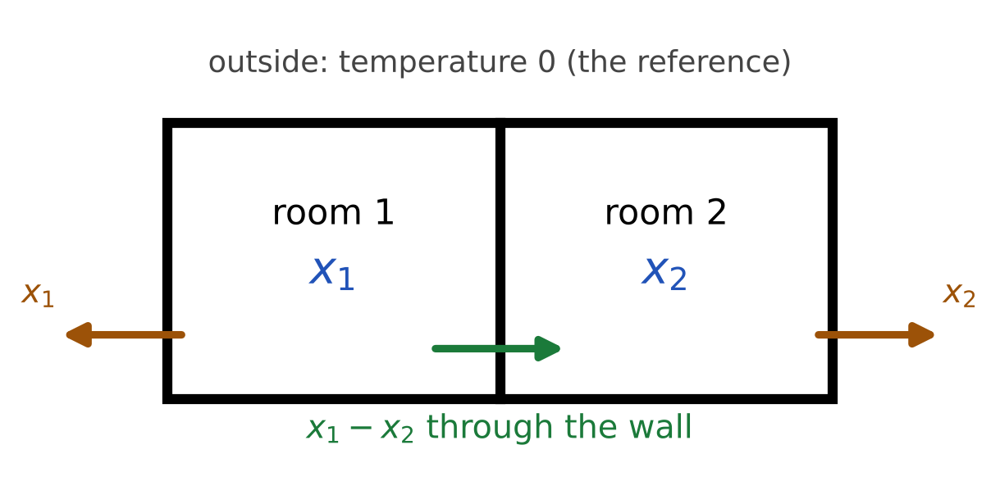

Two rooms lose heat to the outside and to each other; two masses on springs push and pull on each other; a drug passes from the gut into the blood and is then removed. In each case several quantities change at once, and the rate at which each one changes depends on all of them. When the dependence is linear, the whole system is one equation, \(\dot{\vect{x}} = \M{A}\vect{x}\), where the dot means the derivative with respect to time. Chapter 19 solved \(\vect{x}_{k+1} = \M{A}\vect{x}_k\) for systems that change in steps; this chapter does the same for systems that change continuously, with the same tools. This chapter assumes you have met first-order differential equations such as \(\dot{x} = ax\).
23.1 Build intuition
The app draws the phase portrait of \(\dot{\vect{x}} = \M{A}\vect{x}\): the paths that the state \(\vect{x}(t)\) traces out in the plane, from many starting points. Small arrows show the direction of motion at each point, and the chart on the right places the matrix by its trace and determinant.
In Two rooms cooling, click to start some new paths. They all end at the origin, but how do they approach it? Compare the paths with the dashed eigenvector lines.
In Saddle, start paths close to each eigenvector line. Which line do paths move along towards the origin, and which away?
Compare Damped spring, Undamped spring and Growing spiral. Their eigenvalues are complex. What does the real part decide?
Change one entry of \(\M{A}\) at a time and watch the dot move on the trace–determinant chart, which this chapter explains later. Where on the chart does the picture change type?
23.2 The ideas
Systems of differential equations
Suppose quantities \(x_1, \dots, x_n\) change with time \(t\), and each rate of change is a linear combination of all of them: \[
\begin{aligned}
\dot{x}_1 &= a_{11}x_1 + \dots + a_{1n}x_n, \\
&\;\;\vdots \\
\dot{x}_n &= a_{n1}x_1 + \dots + a_{nn}x_n.
\end{aligned}
\] In matrix form this is \(\dot{\vect{x}} = \M{A}\vect{x}\), and together with a starting state \(\vect{x}(0) = \vect{x}_0\) it has exactly one solution. The origin is an equilibrium: if \(\vect{x} = \zerovec\), nothing changes.
Higher-order equations fit the same pattern. For a mass on a spring with damping, \(\ddot{x} + c\dot{x} + kx = 0\), take the position and the velocity as the two quantities, \(x_1 = x\) and \(x_2 = \dot{x}\). Then \(\dot{x}_1 = x_2\) and \(\dot{x}_2 = -kx_1 - cx_2\), so \[
\frac{d}{dt}\mat{x_1 \\ x_2} = \mat{0 & 1 \\ -k & -c}\mat{x_1 \\ x_2}.
\] Any linear equation of order \(n\) becomes a system of \(n\) first-order equations in this way, which is also how numerical ODE solvers expect equations to be written.
Eigenvector solutions
For one equation, \(\dot{x} = ax\) has solution \(x = e^{at}x_0\). So try \(\vect{x}(t) = e^{\lambda t}\vect{v}\) for a fixed vector \(\vect{v}\). Then \(\dot{\vect{x}} = \lambda e^{\lambda t}\vect{v}\) and \(\M{A}\vect{x} = e^{\lambda t}\M{A}\vect{v}\), and these are equal exactly when \(\M{A}\vect{v} = \lambda\vect{v}\). Every eigenvector gives a solution that stays on its line through the origin, growing if \(\lambda > 0\) and shrinking if \(\lambda < 0\).
The equation is linear, so sums of solutions are solutions. If \(\M{A}\) has \(n\) independent eigenvectors, write the starting state in terms of them, \(\vect{x}_0 = c_1\vect{v}_1 + \dots + c_n\vect{v}_n\) (Chapter 15). Then \[
\vect{x}(t) = c_1e^{\lambda_1 t}\vect{v}_1 + c_2e^{\lambda_2 t}\vect{v}_2 + \dots + c_ne^{\lambda_n t}\vect{v}_n.
\tag{23.1}\] Each term is a mode of the system, evolving independently of the others. This is Equation 19.3 of Chapter 19 with \(\lambda^k\) replaced by \(e^{\lambda t}\). In the long run, the mode with the largest \(\lambda\) dominates.
NoteExample 1: two rooms cooling
Two rooms, at temperatures \(x_1\) and \(x_2\) above the outside temperature, each lose heat to the outside and exchange heat with each other through a shared wall (Figure 23.1). With suitable units, \[
\dot{x}_1 = -x_1 - (x_1 - x_2),
\qquad
\dot{x}_2 = -x_2 - (x_2 - x_1).
\] Starting from \(\vect{x}_0 = (3, 1)\T\), find \(\vect{x}(t)\).

Figure 23.1: The two rooms of Example 1. Each loses heat to the outside at a rate equal to its temperature (brown), and heat flows through the shared wall at a rate equal to the difference in temperature (green).
Solution. The matrix is \(\M{A} = \mat{-2 & 1 \\ 1 & -2}\), with trace \(-4\) and determinant 3, so \(\lambda^2 + 4\lambda + 3 = 0\) and \(\lambda = -1\) or \(-3\). Eigenvectors: \((1, 1)\T\) for \(\lambda = -1\) and \((1, -1)\T\) for \(\lambda = -3\). Writing \(\vect{x}_0 = (3, 1)\T = 2(1, 1)\T + 1(1, -1)\T\), \[
\vect{x}(t) = 2e^{-t}\mat{1 \\ 1} + e^{-3t}\mat{1 \\ -1}.
\] The modes have a physical meaning. In the first, both rooms are equally warm, so no heat crosses the wall and both cool at rate 1. In the second, one room is warmer than the other by as much as the other is cooler; heat also flows through the wall, so this difference dies away three times as fast. After a short time the temperatures are almost equal, and both fall together. This is Two rooms cooling in the app: paths first move parallel to \((1, -1)\) onto the line through \((1, 1)\), then slide along it to the origin.
Complex eigenvalues: oscillation
A real matrix can have complex eigenvalues \(\lambda = \alpha \pm \beta i\) (Chapter 18). Equation 23.1 still holds, and by Euler’s formula \[
e^{(\alpha + \beta i)t} = e^{\alpha t}(\cos\beta t + i\sin\beta t).
\] The imaginary parts cancel in the real solution, leaving combinations of \(e^{\alpha t}\cos\beta t\) and \(e^{\alpha t}\sin\beta t\). The imaginary part \(\beta\) sets the angular frequency of oscillation, and the real part \(\alpha\) decides whether the oscillation dies away (\(\alpha < 0\)), grows (\(\alpha > 0\)) or carries on for ever (\(\alpha = 0\)).
NoteExample 2: a damped spring
Solve \(\ddot{x} + 2\dot{x} + 5x = 0\) with \(x(0) = 1\), \(\dot{x}(0) = 0\), and describe the motion.
Solution. With \(x_1 = x\) and \(x_2 = \dot{x}\), the matrix is \(\M{A} = \mat{0 & 1 \\ -5 & -2}\), with trace \(-2\) and determinant 5. So \(\lambda^2 + 2\lambda + 5 = 0\), giving \(\lambda = -1 \pm 2i\). The solution is a combination of \(e^{-t}\cos 2t\) and \(e^{-t}\sin 2t\): \[
x(t) = e^{-t}(a\cos 2t + b\sin 2t).
\] From \(x(0) = 1\), \(a = 1\). Differentiating, \(\dot{x}(0) = -a + 2b = 0\), so \(b = \tfrac{1}{2}\), and \[
x(t) = e^{-t}\left(\cos 2t + \tfrac{1}{2}\sin 2t\right).
\] The mass oscillates with angular frequency 2, and the amplitude decays like \(e^{-t}\): a stable spiral in the phase plane, Damped spring in the app. Without damping (\(\ddot{x} + 4x = 0\), Undamped spring), the eigenvalues would be \(\pm 2i\) and the paths closed ellipses.
Stability
The equilibrium is stable if every solution tends to \(\zerovec\), and that depends only on the real parts of the eigenvalues.
ImportantStability of \(\dot{\vect{x}} = \M{A}\vect{x}\)
Every solution tends to \(\zerovec\) if and only if every eigenvalue of \(\M{A}\) has negative real part. If any eigenvalue has positive real part, most solutions grow without limit.
Compare the discrete case of Chapter 19, where the test was \(\lvert\lambda\rvert < 1\): there the factor per step is \(\lambda\), here it is \(e^{\lambda}\) per unit time, and \(\lvert e^{\lambda}\rvert < 1\) exactly when the real part of \(\lambda\) is negative.
For a \(2 \times 2\) matrix, the eigenvalues are the roots of \(\lambda^2 - \tau\lambda + \Delta = 0\), where \(\tau\) is the trace and \(\Delta\) the determinant (Chapter 18), so these two numbers decide the type of the phase portrait:
Condition
Eigenvalues
Phase portrait
\(\Delta < 0\)
real, opposite signs
saddle: unstable
\(\Delta > 0\), \(\tau^2 > 4\Delta\)
real, same sign
node: stable if \(\tau < 0\), unstable if \(\tau > 0\)
spiral: stable if \(\tau < 0\), unstable if \(\tau > 0\)
\(\Delta > 0\), \(\tau = 0\)
purely imaginary
centre: closed orbits
This is the chart in the app: the parabola \(\tau^2 = 4\Delta\) separates nodes from spirals, and the vertical axis separates stable from unstable.
The matrix exponential
For one equation the solution is \(e^{at}x_0\). For a system, define the matrix exponential by the same power series as \(e^x\): \[
e^{\M{A}t} = \M{I} + \M{A}t + \frac{(\M{A}t)^2}{2!} + \frac{(\M{A}t)^3}{3!} + \cdots
\] The series always converges, and differentiating term by term gives \(\frac{d}{dt}e^{\M{A}t} = \M{A}e^{\M{A}t}\) (Section C.16). So the solution of \(\dot{\vect{x}} = \M{A}\vect{x}\), \(\vect{x}(0) = \vect{x}_0\), is \[
\vect{x}(t) = e^{\M{A}t}\vect{x}_0,
\] for every square matrix, diagonalisable or not. The matrix \(e^{\M{A}t}\) maps the state at time 0 to the state at time \(t\).
When \(\M{A} = \M{P}\M{D}\M{P}^{-1}\) is diagonalisable, every power is \(\M{A}^k = \M{P}\M{D}^k\M{P}^{-1}\) (Chapter 19), so the whole series factorises: \[
e^{\M{A}t} = \M{P}e^{\M{D}t}\M{P}^{-1},
\qquad
e^{\M{D}t} = \mat{e^{\lambda_1 t} & & \\ & \ddots & \\ & & e^{\lambda_n t}}.
\] This is Equation 23.1 again, written as a single matrix. One warning: \(e^{\M{A}}e^{\M{B}}\) equals \(e^{\M{A} + \M{B}}\) only when \(\M{A}\M{B} = \M{B}\M{A}\), because matrix multiplication is not commutative.
NoteExample 3: a matrix exponential
Find \(e^{\M{A}t}\) for the matrix of Example 1, and use it to find \(\vect{x}(1)\).
Solution. The unit eigenvectors are \(\tfrac{1}{\sqrt{2}}(1, 1)\T\) and \(\tfrac{1}{\sqrt{2}}(1, -1)\T\), and since \(\M{A}\) is symmetric, \(\M{P}^{-1} = \M{P}\T\) (Chapter 20). Then \[
e^{\M{A}t} = \M{P}\mat{e^{-t} & 0 \\ 0 & e^{-3t}}\M{P}\T = \frac{1}{2}\mat{e^{-t} + e^{-3t} & e^{-t} - e^{-3t} \\ e^{-t} - e^{-3t} & e^{-t} + e^{-3t}}.
\] At \(t = 0\) this is \(\M{I}\), as it should be. At \(t = 1\), \[
\vect{x}(1) = e^{\M{A}}\mat{3 \\ 1} = \mat{2e^{-1} + e^{-3} \\ 2e^{-1} - e^{-3}} \approx \mat{0.7855 \\ 0.6860},
\] which agrees with Example 1.
23.3 In code
SciPy’s expm and MATLAB’s expm compute the matrix exponential directly, without needing eigenvectors, and work for any square matrix. For systems that are not linear, or not constant in time, numerical solvers such as solve_ivp and ode45 step the solution forward in time; they are worth trying on linear systems too, where you can check their answers.
A= [-21;1-2];x0= [3;1];expm(A*1) *x0% x(1) for Example 1% Example 2: the damped spring, solved numericallyS= [01;-5-2];opts=odeset('RelTol',1e-10,'AbsTol',1e-12);[t,x] =ode45(@(t,x) S*x, [02], [1;0],opts);x(end,:) % position and velocity at t = 2exp(-2) * (cos(4) +0.5*sin(4)) % exact positioneig(S) % -1 + 2i and -1 - 2i
ans =
0.7855
0.6860
ans =
-0.1397 0.2561
ans =
-0.1397
ans =
-1.0000 + 2.0000i
-1.0000 - 2.0000i
23.4 Check your understanding
TipA \(2 \times 2\) matrix has eigenvalues \(-1\) and \(2\). Is the origin stable?
No: it is a saddle. Paths along the eigenvector for \(-1\) go in, but almost every other path is eventually carried away along the eigenvector for 2.
TipWhat is \(e^{\M{A}t}\) when \(\M{A} = \M{0}\)?
\(\M{I}\), for every \(t\): nothing changes.
TipCan the trace alone tell you that a \(2 \times 2\) system is unstable?
Yes, if it is positive: the trace is the sum of the eigenvalues (or twice their real part), so at least one eigenvalue has positive real part. A negative trace alone is not enough, since a saddle can have negative trace.
23.5 Key ideas
Coupled linear differential equations can be written as \(\dot{\vect{x}} = \M{A}\vect{x}\).
Each eigenvector \(\vect{v}\) with eigenvalue \(\lambda\) gives a solution \(e^{\lambda t}\vect{v}\), and the general solution is a combination of these.
Complex eigenvalues \(\alpha \pm \beta i\) give oscillation at frequency \(\beta\), growing or decaying like \(e^{\alpha t}\).
The equilibrium at the origin is stable when every eigenvalue has a negative real part.
The matrix exponential solves every such system at once: \(\vect{x}(t) = e^{\M{A}t}\vect{x}(0)\).
23.6 Exercises
Write \(\ddot{x} + 3\dot{x} + 2x = 0\) as a first-order system, find the eigenvalues, and classify the equilibrium.
(a) Show that \(e^{\M{D}t} = \mat{e^{at} & 0 \\ 0 & e^{bt}}\) for \(\M{D} = \mat{a & 0 \\ 0 & b}\), using the power series.
For \(\M{N} = \mat{0 & 1 \\ 0 & 0}\), show that \(e^{\M{N}t} = \M{I} + \M{N}t\), and use it to solve \(\dot{\vect{x}} = \M{N}\vect{x}\). What physical situation does this describe?
A mass on a spring obeys \(\ddot{x} + c\dot{x} + 4x = 0\) with damping constant \(c \ge 0\). For which values of \(c\) does the mass oscillate? What happens at the boundary value?
Show that if \(\M{A}\) is symmetric and negative definite, every solution of \(\dot{\vect{x}} = \M{A}\vect{x}\) tends to \(\zerovec\), and that \(\lVert\vect{x}(t)\rVert\) decreases all the time. (Hint: use orthonormal eigenvectors, Chapter 20.)
Code. A dose of 100 mg of a drug is swallowed. The amount \(x_1\) in the gut and \(x_2\) in the blood obey \[
\dot{x}_1 = -0.5x_1,
\qquad
\dot{x}_2 = 0.5x_1 - 0.2x_2,
\] with time in hours. Use the matrix exponential to compute \(\vect{x}(t)\) for \(0 \le t \le 20\), plot both amounts, and find when the amount in the blood is greatest and what it is. Check against the exact answer from the eigenvalues.
Control engineering: aircraft, robots and power grids are modelled near an operating point by \(\dot{\vect{x}} = \M{A}\vect{x} + \M{B}\vect{u}\), where \(\vect{u}\) is the control input. Feedback \(\vect{u} = -\M{K}\vect{x}\) changes the matrix to \(\M{A} - \M{B}\M{K}\), and controller design chooses \(\M{K}\) to move its eigenvalues into the left half of the complex plane.
Vibration: undamped structures obey \(\ddot{\vect{x}} = -\M{K}\vect{x}\), and each eigenvector of \(\M{K}\) is a mode shape vibrating at angular frequency \(\sqrt{\lambda}\), as in Chapter 18 exercise 7. Engineers check that these frequencies avoid those of engines, footsteps or wind.
Pharmacokinetics: compartment models like exercise 7, with more compartments, predict drug levels in the body and guide dosing.
Electrical circuits: the currents and voltages in a circuit with resistors, capacitors and inductors obey a linear system, whose eigenvalues give the circuit’s time constants and resonant frequencies (Chapter 32).
Nonlinear systems: near an equilibrium, a nonlinear system \(\dot{\vect{x}} = \vect{f}(\vect{x})\) behaves like \(\dot{\vect{x}} = \M{J}\vect{x}\), where \(\M{J}\) is the Jacobian there (Chapter 22). The eigenvalues of the Jacobian decide whether populations, chemical reactions or orbits are stable.
23.8 Going further
Proofs that \(\frac{d}{dt}e^{\M{A}t} = \M{A}e^{\M{A}t}\) and that the solution is unique: Section C.16.
A defective matrix, such as \(\mat{\lambda & 1 \\ 0 & \lambda}\), gives solutions containing \(te^{\lambda t}\), as exercise 4(b) shows for \(\lambda = 0\). The Jordan form organises all such cases, but in practice expm handles them without it.
Forced systems \(\dot{\vect{x}} = \M{A}\vect{x} + \vect{f}(t)\) are solved by \(\vect{x}(t) = e^{\M{A}t}\vect{x}_0 + \int_0^t e^{\M{A}(t - s)}\vect{f}(s)\,ds\), the vector version of the integrating factor method.
When eigenvalues differ hugely in size, as in chemical kinetics, the fast modes die almost at once but force ordinary solvers to take tiny steps. Such stiff systems need special solvers, such as solve_ivp(..., method="BDF") or MATLAB’s ode15s.